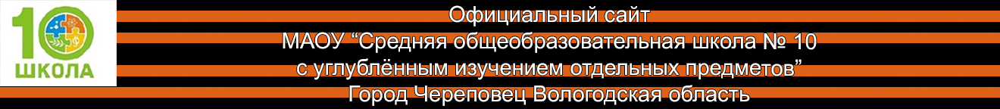
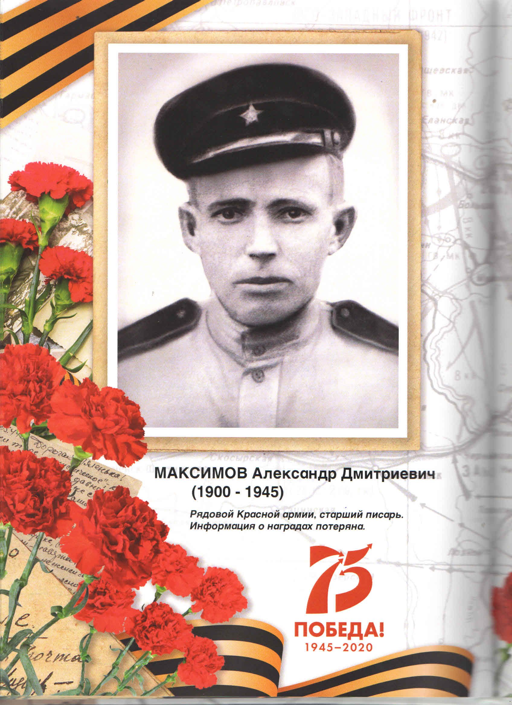
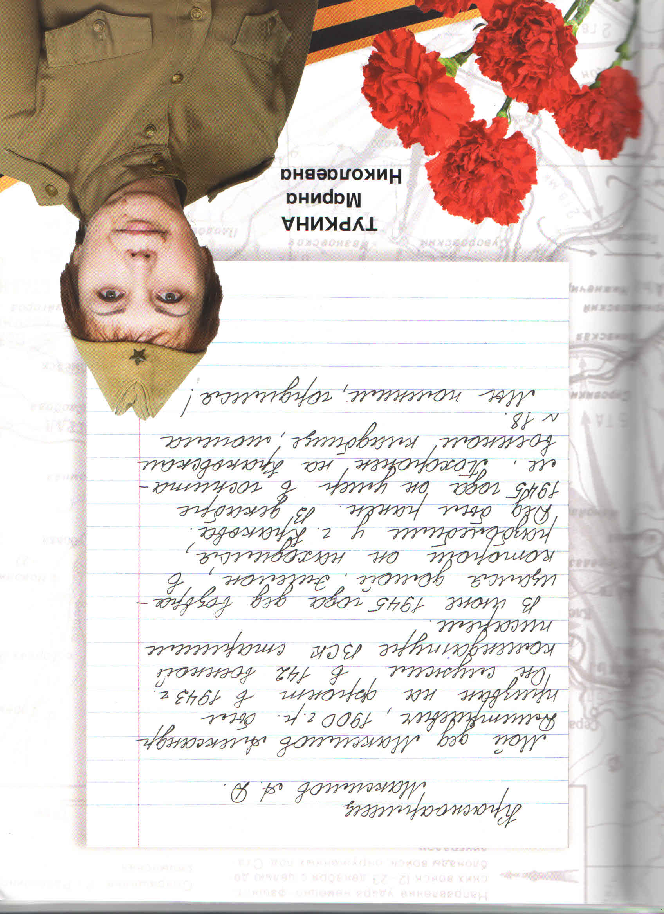

О Великой Отечественной Войне
Факты и история
Курская битва
Сталинградская битва
Битва за Москву
Краткая история всей Войны
Техника
Т34-85 Символ победы
ИС-2
Пистолет-пулемет Судаева
Немецкая техника
Творчество на тему ВОВ
Картины посвященные победе
В художественной литературе
Музыка Победы
Песня и клип Sabaton - Defence Of Moscow (Битва за Москву)
Песня Sabaton - Panzerkampf (Курская битва)
Стихотворение "Памяти солдата", читает автор - Рустем Булатов
 